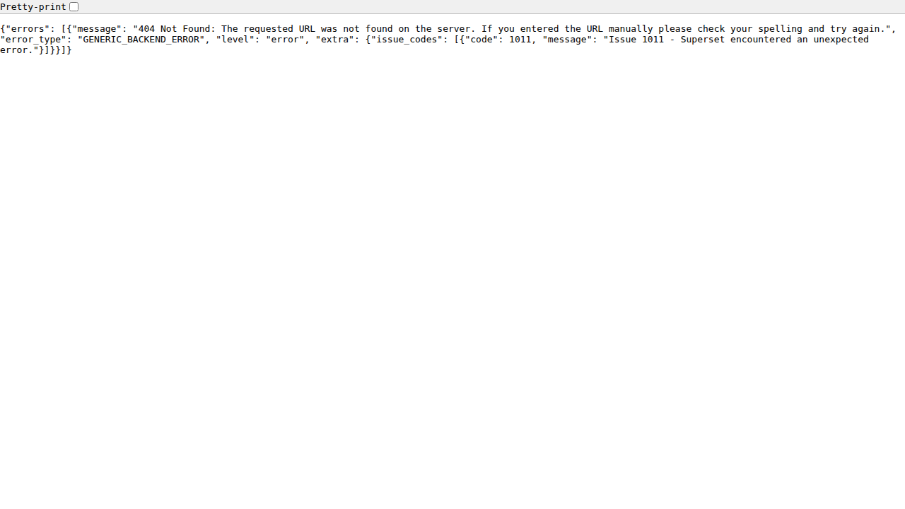
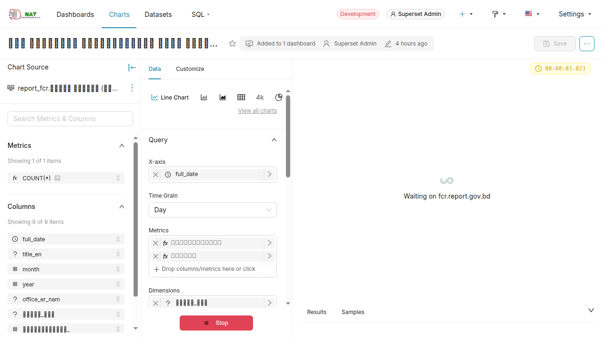

NAT
National Analytical Tool
A modern, enterprise-ready business intelligence web application.

A modern, enterprise-ready business intelligence web application.






Natural Language Querying (NLQ) to ask data questions in plain English and get instant answers.
Automatic detection of anomalies, trends, and key drivers within your datasets.
Intelligent recommendations for the best visualization types based on selected data fields.
NAT (National Analytical Tool) is a modern, enterprise-ready business intelligence web application based on the open-source Apache Superset project.
It is built on a robust stack including Python (Flask) for the backend, React for the frontend, and SQLAlchemy for database connectivity.
NAT supports nearly all SQL-speaking databases, including PostgreSQL, MySQL, Oracle, MS SQL, Redshift, Snowflake, ClickHouse, Trino, and many more.
Yes, users can easily upload CSV, Excel, and Columnar files to create datasets and visualize them instantly.
Absolutely. We use enterprise-grade security with Role-Based Access Control (RBAC), Row-Level Security (RLS), and support for major authentication backends (OpenID, LDAP, OAuth, etc).
It allows you to define virtual metrics (e.g., "Revenue = Price * Qty") and calculated columns centrally, so they can be reused across all charts.
Yes! The "SQL Lab" provides a powerful, multi-tab SQL IDE for advanced users to query data directly and visualize the results.
You can share direct links, email PDF/image reports, or even embed dashboards securely into other applications.
Yes, dashboards can be configured to auto-refresh at specific intervals, and the architecture supports asynchronous queries for handling large datasets.
We offer over 40 built-in visualization types, from standard bars and lines to advanced geospatial maps (DeckGL), Sankey diagrams, and heatmaps.
Yes, the architecture is extensible. Developers can create custom visualization plugins using the plugin system.
We use a comprehensive RBAC system with standard roles (Admin, Alpha, Gamma) and the ability to define granular custom roles.
Yes, Row-Level Security (RLS) allows you to define filters that restrict which data rows a user can see based on their role or ID.
Yes, a public REST API is available for programmatic access to charts, dashboards, datasets, and user management.
Yes, you can schedule automated email or Slack reports containing snapshots of your dashboards or charts.
We use a caching layer (supporting Redis, Memcached, etc.) to store query results, ensuring sub-second load times for popular dashboards.
Yes, the Embedded SDK allows you to embed dashboards into your own customer-facing applications with custom authentication.
Explore is a no-code interface where you can build charts by selecting metrics and dimensions, applying filters, and customizing styles.
Yes, integration with DeckGL and Mapbox allows for powerful geospatial visualizations like scatterplots, grid layers, and polygon maps.
Yes, the application is designed to be cloud-native and scalable, running seamlessly in Docker and Kubernetes environments.